Virtual Machines
Written by Keven Jolly
Introduction
Welcome to my guide on creating and using virtual machines! If these steps are followed through, you should have a working Debian desktop that can be accessed within your own computer.
There are a few tidbits to keep in mind while following this guide:
- All steps are performed on a fresh installation of Debian 12.2.
- I will be using KVM to run my VM.
1 - Prep
Before we begin creating a virtual machine, there are some steps we need to perform:
- Install Virtual Manager
- Download the disk image of our OS
On any Linux system, you can use your package manager of choice to install Virtual Manager. On Debian and its derivatives, this is accomplished with the apt package manager:
sudo apt install virt-manager
While we could manage our virtual machine exclusively from the command line, using a GUI interface such as Virtual Manager will save us a lot of time.
Now, let's download the disk image. For Debian, the download is directly on the official website, debian.org.
2 - Setup
2.1 - Creating the Machine
Let's start Virtual Manager (enter virt-manager in the command line) and see what we can do:
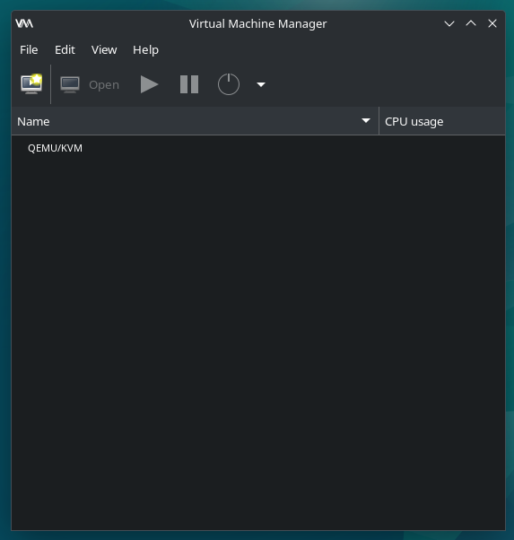
To begin creating our new virtual machine, click on either File > New Virtual Machine, or click the icon at the top left.
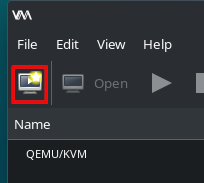
We are met with the New VM dialogue, and asked how to install the Operating System.
Since we have already downloaded the disk image, we will select the option labeled Local install media (ISO image or CDROM). Continue by pressing the button labeled Forward
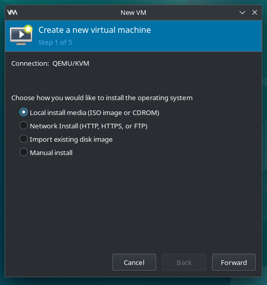
Next, we are asked to select the installation media. CLicking Browse... followed by Browse Local, we can find the ISO in our downloads folder using a traditional File Manager dialogue.
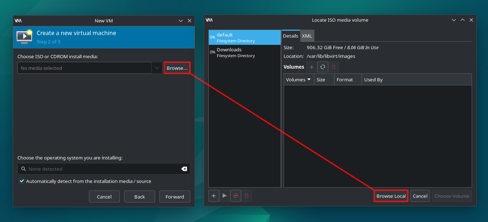
Once the Installation media is selected, you may continue forward.
However, it is possible that Virtual Manager does not detect the operating system properly. In that case, uncheck the box at the bottom and search for your chosen operating system, or the closest version to it.
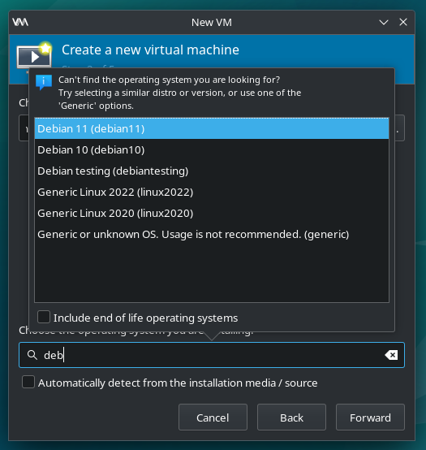
Now, we need to specify the resources to be allocated to the Virtual Machine. You could allow it access to your full system resources, but you are likely to run into performance issues, especially if you install multiple VM's
For a typical computer, I would choose about one quarter or one third of the available resources.
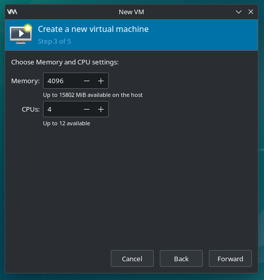
Our next step is to create the storage device for this Virtual Machine. The default size of 20.0 GiB will suffice, although you may want to configure this if your host machine has a low amount of space available.
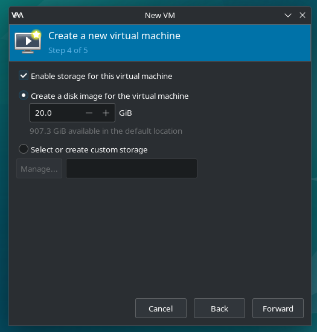
Finally, we are asked to set the name of the Virtual Machine and to review details about the installation. This name can be anything you want, but for this guide I have chosen to name it after the Operating System.
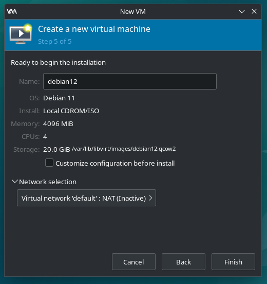
Now click finish, and wait for the virtual machine to boot for the first time.
2.2 - Installing Debian
Once the virtual machine has booted, you will be greeted with a new window.
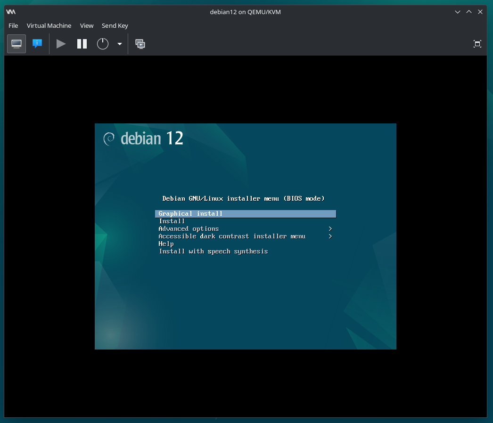
We'll explore this window more in depth later on. For now, we need to finish the installation process.
If you have chosen to use Debian 12 for your Operating System, then the next set of steps should apply to you.
If you chose something else, your steps may vary.
To start, we'll select the Graphical Install option
Note: When interacting with the Virtual Machine at this point, your mouse and keyboard may become locked in the window. Pressing Ctrl and Alt at the same time will release control back to the Host system.
We will now be asked to complete a number of steps. Keep in mind that many of them can be changed later.
-
Language
-
The OS's default literary language
-
My Entry: English
-
-
Location
- Approximate location of your machine
-
Keymap
- The layout for your keyboard
-
Hostname
- The name your system uses for networking to other machines. If you are making multiple VM's, this should ideally be unique to each one. But if you are only making one, call it whatever you like.
-
Domain Name
- The domain name that will lead back to this Virtual Machine.
If you don't plan to using a domain name or to network your VM publicly,
you can skip this step.
- The domain name that will lead back to this Virtual Machine.
-
Configure Users
In this step, we will be configuring both the Root User and any additional users.
-
Root Password
- The password for the root user Make sure this is something strong, especially if you plan to use your VM as a public server!
-
User Full Name
- Your full First and Last Name, or something else entirely.
This will be used for a non-root user. - This may be different from the account username.
- Your full First and Last Name, or something else entirely.
-
Username
- The actual username that your user account will use.
Any commands that modify users will use whatever you enter here
- The actual username that your user account will use.
-
User Password
- The password for the default user If you plan on making this VM public, and this user a sudoer, make this a strong password. Otherwise, I'd suggest something easy to remember.
-
-
Clock
- Your preference of timezone for the system time.
-
Disk Partitions
We will configure everything about how our Virtual Machine installs onto the disk in this step.
-
Partitioning Method
-
Normally, if your disk already had partitions, there would be multiple options available for configuring the installation to work around the existing partitions. However, since we made a new virtual disk for this VM, we don't need those options.
-
For Virtual Machines, I suggest selecting the option:
Guided - use entire disk and set up LVM
-
-
Partition Disks
- There's only one option available, so just hit continue.
-
Partitioning Scheme
- Selects how the System Files should be partitioned.
If you're not sure, just use
All files in one partition
- Selects how the System Files should be partitioned.
If you're not sure, just use
-
Confirm
- You'll be asked to confirm the changes. Select yes and continue.
-
Volume Group Portion
- If you chose to use LVM, you'll be asked how much of the volume to use by default, since it is possible to expand it later. For now, there's no reason to decrease this size, so we can leave this option alone and continue.
-
Confirm (again)
- Again, select yes and continue
-
-
Scan Extra Media
- You'll be asked if you want to scan more media. We only needed our Installation ISO, so we can continue without scanning anything more.
-
Configuring the Package Manager
Now we need to configure the Package Manager
-
Package Manager Mirror
- Where the Package Manager will try to download packages from. The default option should be best.
-
Debian Archive Mirror
- Again, the default option should work best
-
HTTP Proxy
- If you have a proxy, you can configure it here. If you don't, just press continue.
-
Popularity Contest
- Whether statistics about the packages you install or use should be collected. This defaults to no, so it's fine to just hit continue.
-
-
Select and Install Software
What should be installed by default onto the Virtual Machine. You can choose from a number of Desktop environments, and you can choose to install an SSH and/or a Web server.
-
8 Desktop Environments are listed
-
GNOME is one of the most popular DE's, and is the default selection May be difficult to get used to for Windows users
-
KDE Plasma is highly customizable and stands as a very powerful DE Great for a standalone system, but a little too heavy for a Virtual Machine
-
LXDE is extremely lightweight, but has similarly light features Good if you want a GUI with the absolute minimum resource usage
-
XFCE is very well balanced in terms of weight and usability Great choice for a single Virtual Machine.
-
For now, we will be skipping a DE, as we can simply use the Command Line for setup. Later, we will install XFCE.
-
-
Enabling Web server will install an Apache HTTP server to be run by the Virtual Machine. Select this if you plan to host a website on your VM.
-
Enabling SSH server will allow connecting to the VM remotely via the command line of another device. Further steps can be taken to improve the security.
-
There is no reason to disable Standard System Utilities
With that, here is the selection I am using:
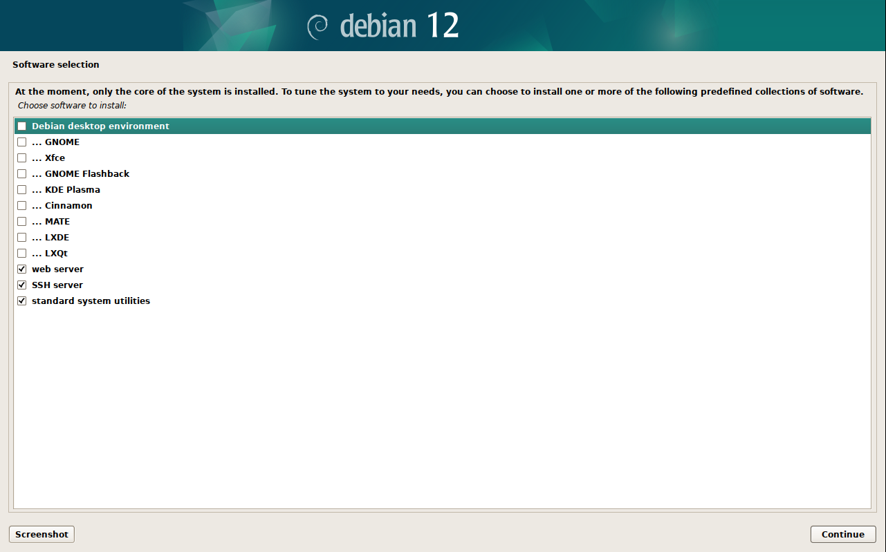
-
-
Grub Boot Loader
You'll be asked if you want to install GRUB boot loader to the primary drive. Since there's no other OS's on the system, it is safe to do so.
- When prompted for a device, select the option listed as
/dev/vdaor similar.
- When prompted for a device, select the option listed as
Once the Grub Boot loader is configured and installed, the installation is complete. You can now load into your Virtual Machine.
3 - First Boot
Note: From here, the order in which you follow the steps may vary. Feel free to jump around and play around with your virtual machine!
3.1 - Virtual Manager Interface
Before continuing forward, let's talk about the interface.
There are plenty of tools to use here, and you may want to take some time to browse around and familiarize yourself with them.
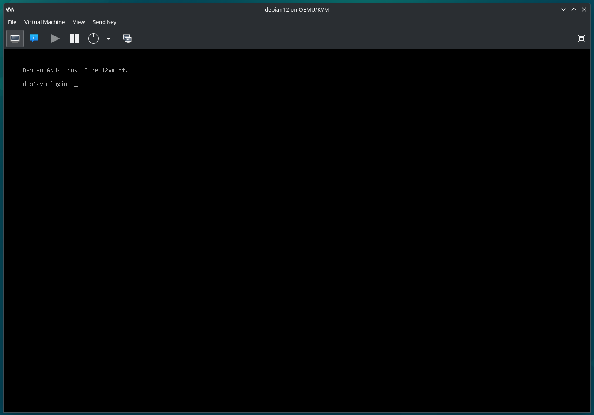
From left-to-right, the icons are as follows:
-
First Section
-
Switch the view to show the display output of the Virtual Machine
-
Swith the view to the Details panel. You'll want to remember this panel for later!
-
-
Second Section
-
Resume a Paused Virtual Machine
-
Pause the Virtual Machine. This will halt all activities until the machine is unpaused.
- This can free up the CPU safely if the Virtual Machine is busy
-
Shutdown Options
-
RebootandShut Downwill send the appropriate signal to the Machine. This is similar to pressing shutdown or restart on your device -
Force Rebootand`Force Offwill immediately shut down the system. This is akin to pulling the power cable, or holding the power button on a device for some time. -
Savewill save the current state of the system's RAM to be loaded later. If you need to restart the Host, but the VM is busy, this is a viable option.
-
-
-
Third Section
-
Snapshots
- Snapshots save the entire state of the System for later restoration. If you need to make potentially destructive changes, visit the Snapshots menu and save the system in case something breaks.
-
Fullscreen
- Fullscreens the VM display.
-
3.2 - Configuring the VM
3.2.1 - Modifying and adding Users
To begin, let's install sudo and allow our default user to use it, so that we do not need to log into root to perform certain actions. We can use apt to install the package, and use usermod to add the user to the sudo group.
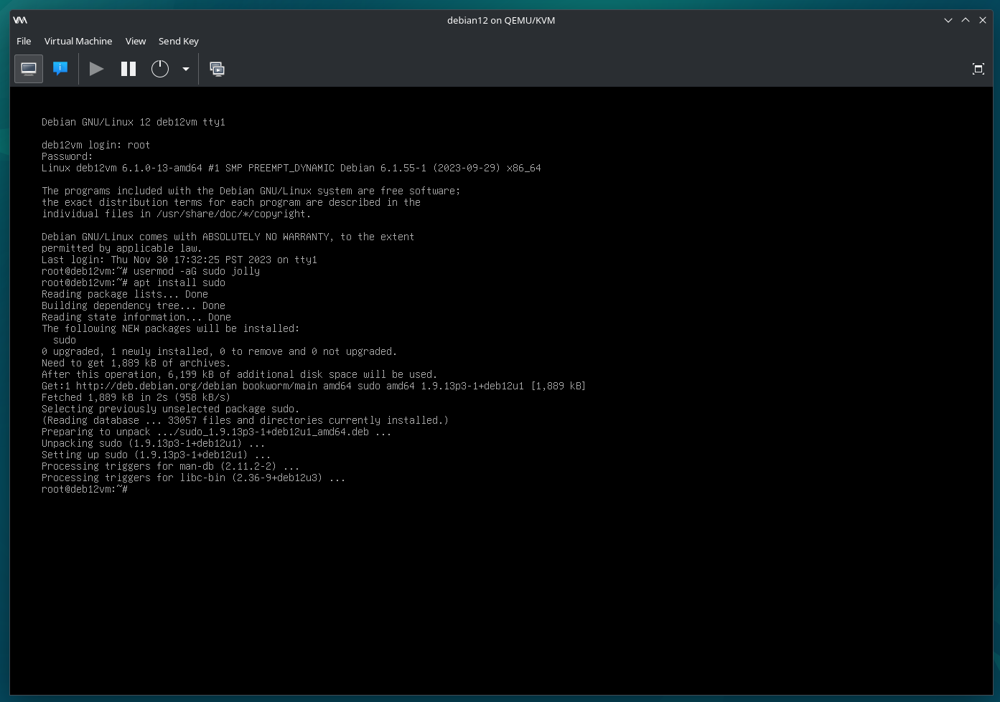
usermod -aG sudo jolly
apt install sudo
Now, we can log into our default user and verify that we can use sudo.
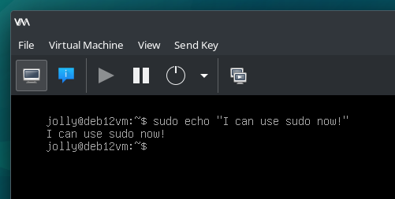
We can also add a few users and make them able to use sudo as well.
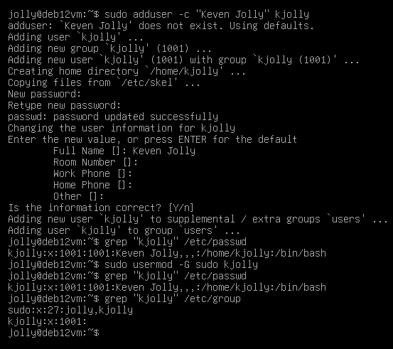
sudo adduser -c "Keven Jolly" kjolly
sudo usermod -G sudo kjolly
grep "kjolly" /etc/passwd
grep "kjolly" /etc/group
3.2.2 - SSH and Serial Port
If you'd rather not need to use the Virtual Machine interface to interact with the machine, there a few ways to do so.
SSH
If you did not already install SSH during the OS installation, you can do so by installing the openssh-server package.
Then, you can use systemctl to activate the SSH system service.
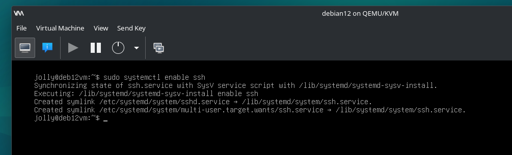
sudo systemctl enable ssh
Now, we can (sort-of) remotely connect to this Virtual Machine by using the ssh command:
ssh <username>@<ip>
<username>is the name of the user that you are attempting to log in as.<ip>is the ip address or the domain name of the machine you are attempting to connect to.
Serial Port console
virsh is a very powerful package for managing Virtual Machines from the command line. If you do not have it installed on the host, I reccomend that you install it.
You can use Virsh to access the console of your VM without using the interface. To do this, you need to enable command line access from the VM's serial port.
This can be done with the following command:
sudo systemctl enable serial-getty@ttyS0.service
Once done, you can use Virsh to access your VM from the command line of the Host system.
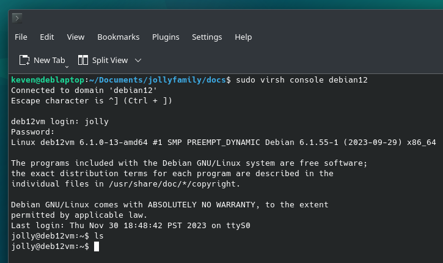
sudo virsh console debian12
Note: Remember to use
Ctrl + ]to exit the console at any time.
You can also verify that the serial port is working by switching the console to the Serial console in Virtual Manager
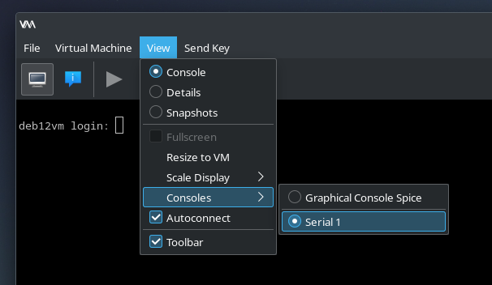
3.2.3 - Installing XFCE Desktop
If you skipped installing a Desktop Environment during the OS installation, you might want to try installing one at this point. Doing so is very easy - we just need to know the package to install.
For XFCE on Debian distributions, the package to install is xfce4.
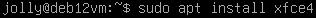
Note: This installation is quite heavy. You may want to skip ahead to LVM if you need to increase your storage space.
After this, you'll want to set the default target to graphical.target using systemctl:
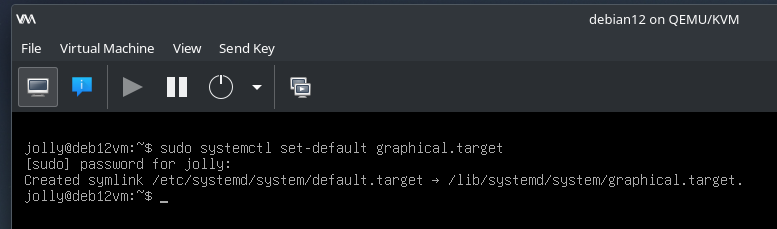
Now reboot the system, and you should be met with a new login screen.
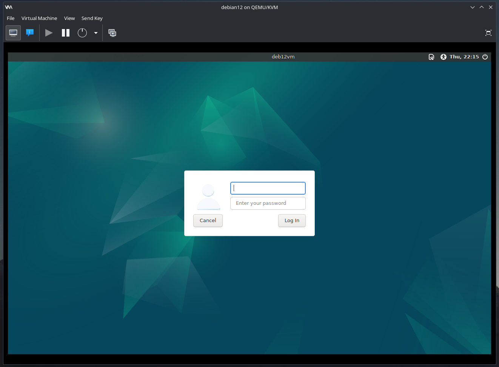
If you want to return to a command line only environmnt, you can use systemctl again to set the default target back to multi-user.target.
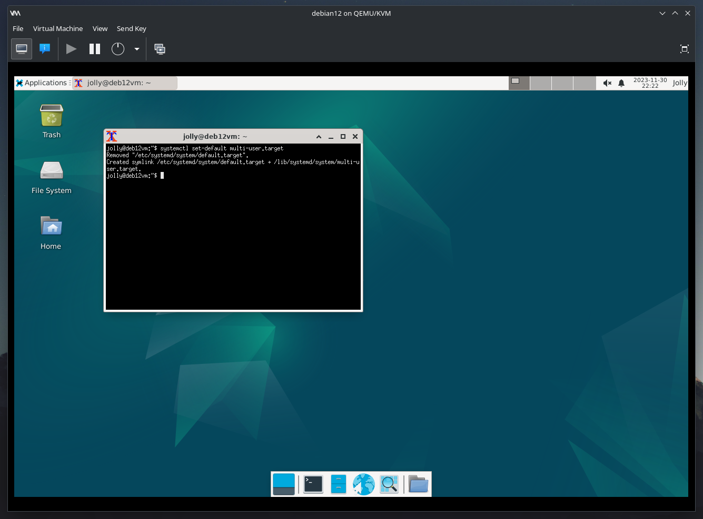
3.2.4 - Apache2 Web Server
If you did not choose to install a web server during the OS setup, you can do so by installing the apache2 package with apt.
Now, if you type your Virtual Machine's IP address into a web browser on the host machine, you'll be met with the Apache2 default page.
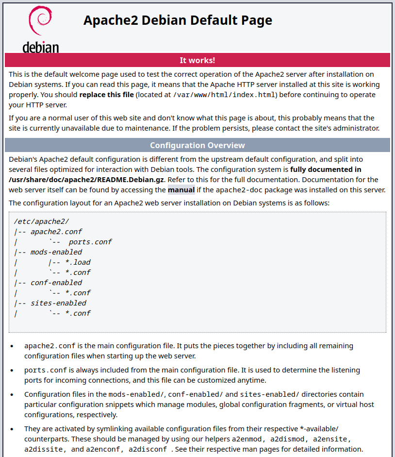
This page's source is located at /var/www/html/index.html within the Virtual Machine, so you may configure it how you please!
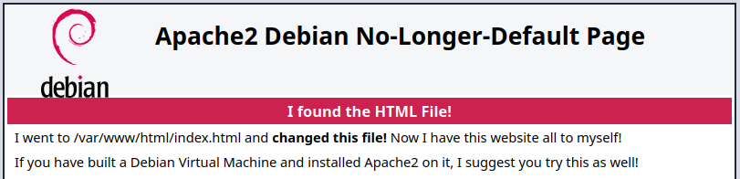
If you want to open access to this page, you'll want to look into a bridge network.
4 - Logical Volume Manager
With Logical Volume Manager, it is possible to append additional storage space to the Virtual Machine without shutting it down. That way, if you need extra storage space, there will be minimal downtime required.
Note: We are going to use some potentially dangerous commands. Now would be a good time to make a snapshot!
There are a few terms that you should know going forward:
| Physical Volumes (PV) | Volume Groups (VG) | Logical Volumes (LV) |
|---|---|---|
| Physical drives installed into the machine | A modifiable group of Physical Volumes | A partition of a Volume Group that acts as a single volume |
A Physical Volume is loaded onto the device, a Volume Group gathers multiple physical volumes together, and a Logical Volume is a single volume carved from one volume group.
4.1 - Adding "Physical" Volumes
To add physical volumes to the virtual machine, we'll want to use Virtual Manager.
Navigate the Details panel and select Add Hardware
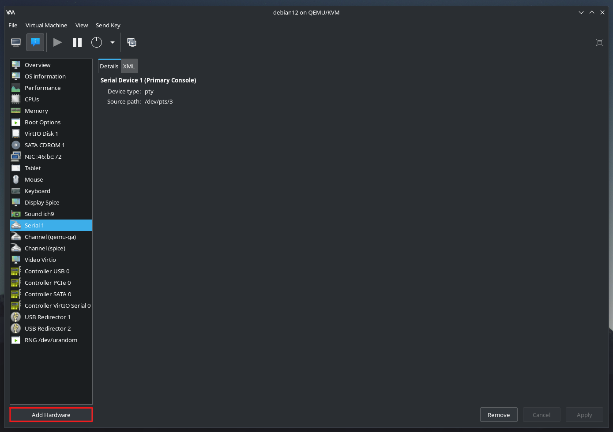
In the new dialogue, we can select to add a Storage device on the left panel. Then, select the amount of space that you would like to append to the virtual machine.
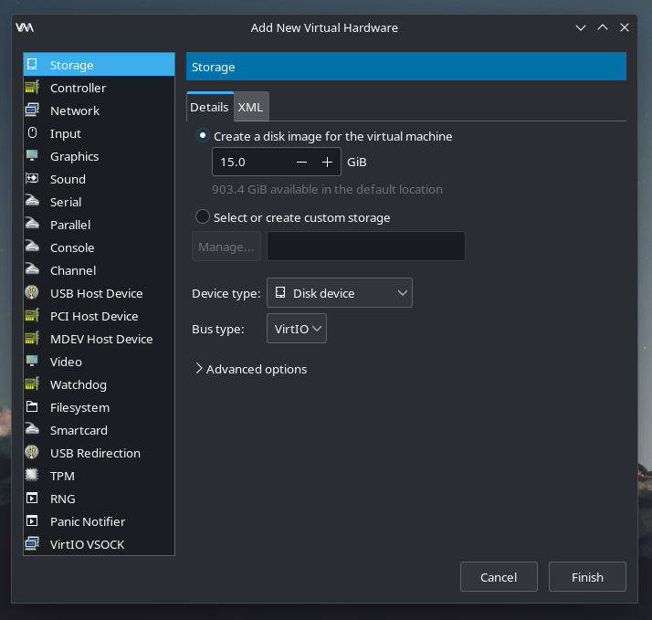
For this guide, I will add two storage devices: one with 15 GiB, the other with 25 GiB.
In the Details panel, you should now see more VirtIO Disk items, depending on how many devices you added.
The machine now has physical storage added, but it has not been configured to recognize it.
We'll want to use fdisk to fix this.
Start by entering fdisk -l to view all attached volumes. You should spot the volume(s) that you added to the machine. Take note of the device's path.
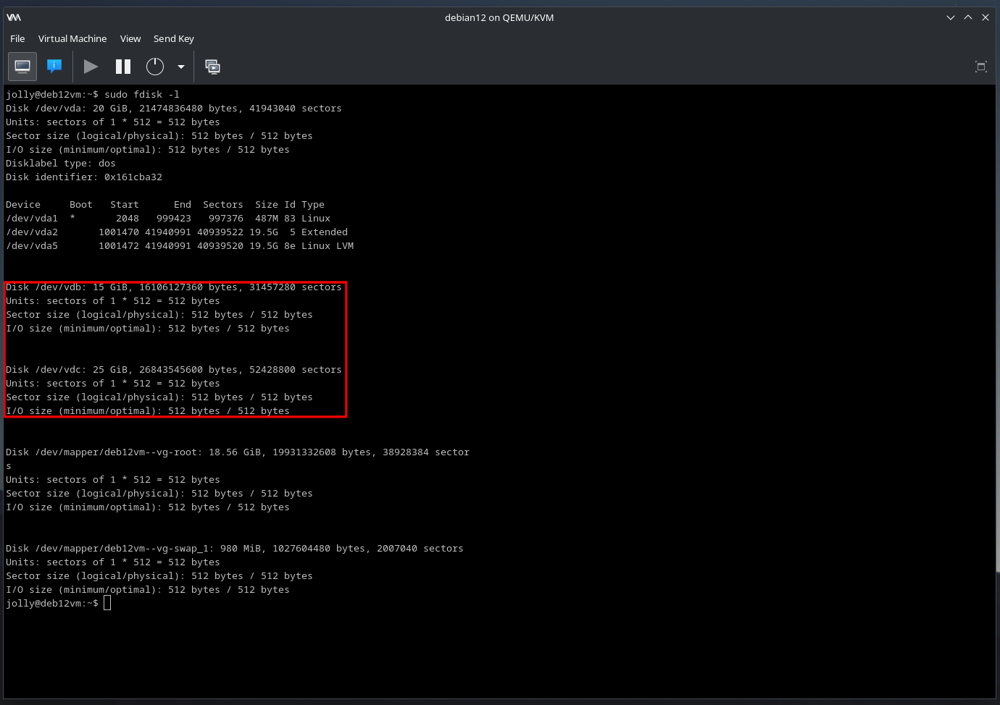
sudo fdisk -l
Now, enter fdisk <path> to start configuring your device.
You will find yourself in a console specific to fdisk.
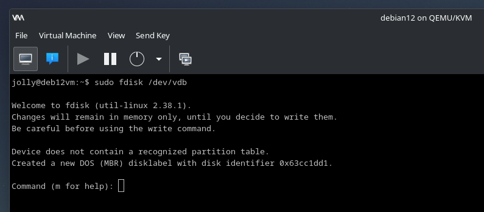
sudo fdisk /dev/vdb
From here, there several commands at your disposal. Those of interest are:
p- Lists information about the volumen- Create a partition on the volumet- Sets the Disk Typew- Writes the changes to Diskq- Exits fdisk
Messing with fdisk too much may cause issues, so follow these next steps closely:
- Create a new partition (
n). For best case, use all of the default values. - Set the disk type to Linux LVM (
t). The code we want to enter for this is 8E (Uselto list all codes available).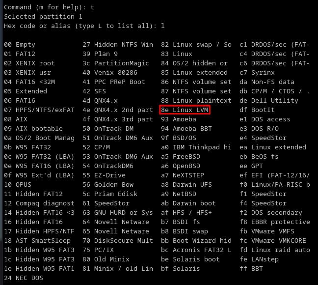
- Write the changes to disk (
w) and exit (q). - Repeat for each disk that you added.
Once those steps have been performed, use fdisk -l again to view the new partitions.
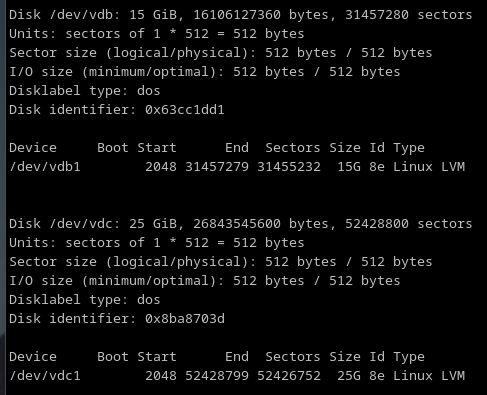
We have partitioned disks, but using pvs still shows no physical volumes.
We can create physical volumes from the partitioned disks by running pvcreate:
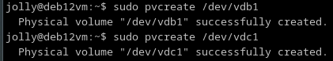
pvcreate /dev/vdb1 /dev/vdb2
4.2 - Volume Groups and Logical Volumes
The physical volumes have now been added to our Virtual Machine, but we can't access it just yet. To do so, we'll need to add the volumes to a Volume Group, and then create some Logical Volumes out of that group.
We'll define a new Volume Group with vgcreate.
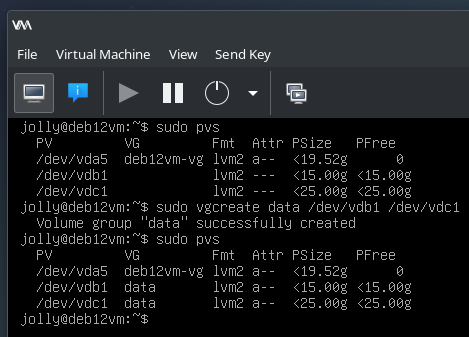
sudo vgcreate data /dev/vdb1 /dev/vdb2
We can see that our Physical Volumes are now contained within a Volume Group. Now, we can add one or more Logical Volumes from this one group, using lvcreate.
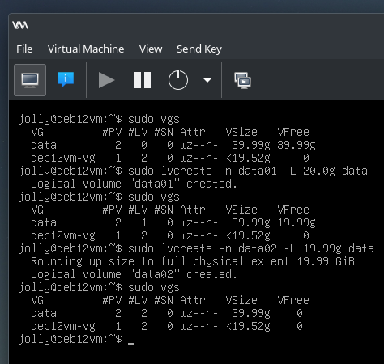
sudo lvcreate -n data01 -L 20.0g data
sudo lvcreate -n data02 -L 19.9g data
4.3 - Mounting the Volumes
We now have two Logical Volumes carved from a Volume Group that holds two Physical Volumes. The space is now recognized by the system, but there are a few more steps we need to complete before we can use the additional storage space.
We need to find the path to our Logical Volumes to use them. We can use this by passing lvdisplay into grep.
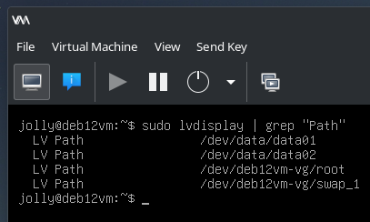
sudo lvdisplay | grep "Path"
The first step to create a file system for each volume. We can use mkfs.ext4 to make a filesystem using the ext4 format.
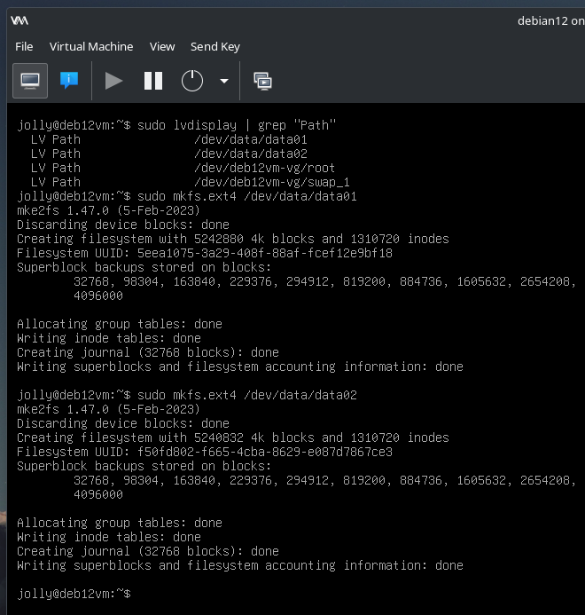
sudo mkfs.ext4 /dev/data/data01
sudo mkfs.ext4 /dev/data/data02
Now that the volumes have file systems associated with them, we can mount them to the system with mount.
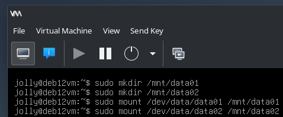
sudo mkdir /mnt/data01
sudo mkdir /mnt/data02
sudo mount /dev/data/data01 /mnt/data02
sudo mount /dev/data/data02 /mnt/data02
We can check that the Filesystems are mounted by creating a file within the mounted directories.
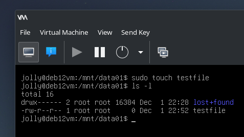
sudo touch testfile
ls -l
The volume is mounted and usable, so it works!
That is, until the next reboot...
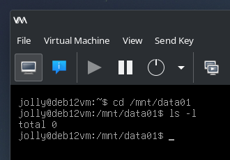
cd /mnt/data01
ls -l
4.4 - Editing fstab
Our testfile disappeared since, once we rebooted, the logical volume was not remounted.
To fix this, we need to add some entries to /etc/fstab.
Note:
fstabis a dangerous file to edit. Make a snapshot before diving too deep!
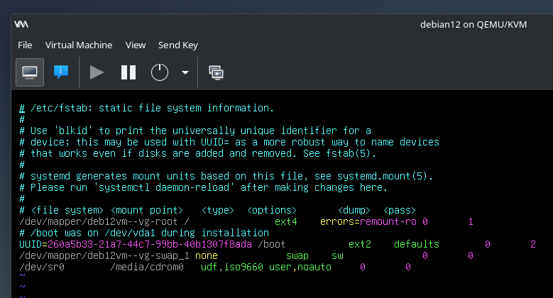
We'll need to add one line to this file for each logical volume we need to mount.
These lines hold the path to the filesystem, the directory to mount the volume, the filesystem type along with a few more options.
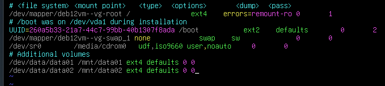
/dev/data/data01 /mnt/data01 ext4 defaults 0 0
/dev/data/data02 /mnt/data02 ext4 defaults 0 0
Now we need to save the file. On our next reboot, we should have access to our filesystem once again.
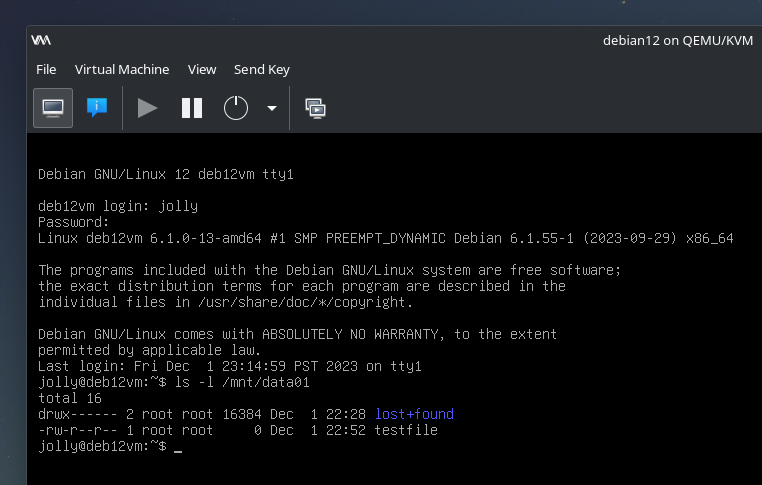
ls -l /mnt/data01
Our Logical volumes are now mounted on startup, meaning we successfully added more storage to the virtual machine!
Alternatively, we can add another layer of reinforcement by entering the device's UUID into fstab instead of the label.
We can see the UUID of our Logical Volumes using blkid.
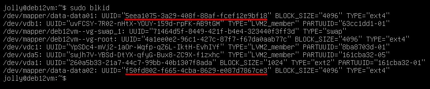
Then, we enter them in place of the respective label into /etc/fstab
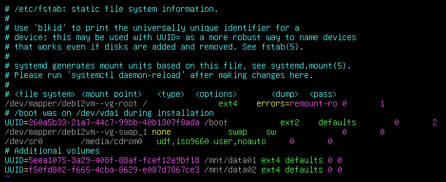
Backup, save, and reboot. Our testfile should be found in /mnt/data01 once again.
To recap, the steps that we followd were:
- Add new Hard Disks through Virtual Manager
- Partition the disks using
fdisk - Create Physical Volumes using
pvcreate - Create a Volume Groups with
vgcreate - Carve some Logical Volumes with
lvcreate - Mount at runtime using
mount - Enable mounting at boot by editing
/etc/fstab
Keep in mind that all of these can be repeated without rebooting. Using LVM to add storage space to our Virtual Machine has a lot of steps, but it allows us to do so without causing any downtime (unless we need to restore a backup).